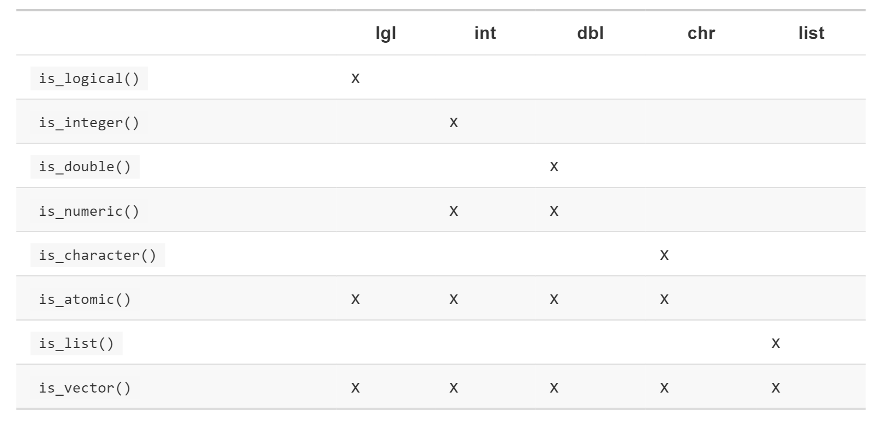

20 Vektorer
Fokus i detta avsnitt är på base R-funktioner så vi behöver egentligen inte ladda in några packages, men eftersom vi ska använda enn handful funktioner från purrr för att hantera några inkonsistenser i base R laddar vi ändå in
20.1 Introduktion
Vektorer är ett centralt begrepp i R och betecknar objekt som är grundläggande för de flesta funktioner i R. Det finns två typer av vektorer i R:
- Atomic vectors, av vilka det finns sex typer: logical, integer, double, character, complex och raw. Integer och double är tillsammans numeriska vektorer.
- Lists, kallas ibland rekursiva vektorer eftersom lists kan innehålla andra lists.
Den huvudskaliga skillnaden mellan atomic och list-vektorer är att atomic är homogena medan lists kan vara heterogena. Objektet NULL används ofta för att markera frånvaron av en vektor (till skillnad från NA som markerar frånvaron av ett värde i en vektor!). NULL uppför sig som en vektor med längden 0. Nedanstående figur sammanfattar relationen mellan de olika typerna:

Varje vektor har två nyckel-egenskaper:
- Dess typ, vilken kan bestämmas med hjälp av
typeof().
## [1] "character"## [1] "integer"- Dess längd som bestäms med hjälp av length().
## [1] 3Vektorer kan även innehålla andra metadata i form av attribut. Dessa attribut används för att skapa förstärkta vetorer (augmented vectors). Det finns tre typer av förstärkta vektorer:
- Factors bygger på integer vektorer
- Datum och datumtid byggs på numeriska vektorer
- Dataframes och tibbles byggs på lists.
Vi ska gå igenom de viktigaste typerna av vektorer: atomic vectors (och då endast logical, integer, double och character), lists och augmented vectors.
20.2 Atomic vectors
20.2.1 Logical vectors
Logiska vektorer är den enklaste typen av atomic vectors. Den kan anta endast tre olika värden: TRUE, FALSE eller NA. Logiska vektorer skapas oftast med hjälp av jämförelsevektorer alternativt med hjälp av c():
## [1] FALSE FALSE TRUE FALSE FALSE TRUE FALSE FALSE TRUE FALSE## [1] TRUE TRUE FALSE NA20.2.2 Numeriska vektorer
Heltal (integers) och double-vektorer är de numeriska vektorerna. I R är siffer-data double som default. Vill du ha dem som integer kan du markera det genom att sätta ett L bakom heltalet:
## [1] "double"## [1] "integer"## [1] 1.5Distinktionen mellan integer och double är vanligtvis inte viktig men det finns två väsentliga skillnader som kan vara bra att känna till:
- Doubles är approximationer och representeras av decimaltal vilka inte alltid kan preciseras med en given mängd minne. Ta t.ex. det kvadrerade värdet av roten ur 2:
## [1] 2## [1] 4.440892e-16Räkna med att det alltid finns ett visst approximeringsfel när man hanterar double vektorer. Istället för att använda exakt likhet (==) när man jämför doubles bör man använda dplyr::near() vilken har en viss numerisk tolerans.
- Integers har ett special-värde
NAmedan doubles har fyra:NA,NaN,Infoch-Inf. De tre sistnämnda kan uppstå genom division:
## [1] -Inf NaN InfIstället för att använda exakt likhet för dessa special-värden bör man, analogt med is.na(), använda någon av hjälpfunktionerna is.finite(), is.infinite() eller is.nan().
20.2.3 Character
Text-strängar är de mest komplexa av atomic vectors eftersom de kan innehålla en godtycklig mängd data. Vi har redan gått igenmom hanteringen av textsträngar [länk till tidigare avsnitt] och kan därför lämna denna typ av atomic vectors.
20.2.4 Använda atomic vectors
Hur använder man då atomic vectors och vilka verktyg finns det för att göra det? Vi ska titta närmare på
- Hur man konverterar en typ till enannan och när det sker automatiskt.
- Hur man kan vrta att ett objekt är en viss typ av vektor.
- Vad som händer då man använder vektorer av olika längd
- Hur man benämner elementen i en vektor
- Hur man extraherar de element man är intresserad av
20.2.4.1 Konvertering (Coercion)
Det finns två sätt att konvertera en typ av vektor till en annan.
- Explicit konvertering sker när du använder funktioner som
as.character(),as.logical(),as.integer()elleras.double(). Det kan vara värt att kolla om du kan åstadkomma detta mer “upstream” så att du inte behöver göra någon konvertering, t.ex. genom att justeracol.typesdå du importerar data. - Implicit konvertering sker när du använder en vektor i en specifik kontext som förväntar en viss typ av vektor. t.ex. då du använder en logisk vektor tillsammans med en summeringsfunktion eller när du använder en double vector där en integer förväntas.
Det första sättet är tämligen straightforward men vi ska dröja vid det andra. Den viktigaste typen av implicit konvertering är då man använder en logisk vektor i en numerisk kontext. I det fallet blir TRUE konverterat till 1 och FALSE till 0. Så summan av en logisk vektor är antalet TRUE och medelvärdet av en logisk vektor är andelen TRUE i vektorn:
## [1] 47## [1] 0.47Det är också viktigt att förstå vad som händer när man försöker mixa flera typer av vektorer med hjälp av c() - den mest komplexa vinner alltid:
## [1] "integer"## [1] "double"## [1] "character"En atomic vector kan inte ha en mix av typer eftersom typen av vektor är en egenskap hos hela vektorn inte dess enskilda element. Om du behöver mixa olika typer ska du istället använda en lista (a list).
20.2.4.2 Testfunktioner
För att ta reda på vilken typ av vektor du har kan du använda typeof(). Ett annat sätt är att använda funktioner som returnerar logiska värden. De tidigare funktionerna i base R (t.ex is.atomic()) kan ibland ge överraskande resultat. De testfunktioner som finns i purrr, if_*, är säkrare och summeras i tabellen nedan:

20.2.5 Scalars och recycling
I R opererar de flesta matematiska funktioner med vektorer. Det innebär att du inte behöver explicit göra en iterering när du använder matematiska funktioner. Därför fungerar t.ex. nedanstående kod:
## [1] 103 106 108 101 107 105 110 104 109 102## [1] FALSE FALSE TRUE FALSE TRUE FALSE FALSE FALSE TRUE FALSEDet är uppenbart vad som händer då man adderar två vektorer av samma längd, men vad händer om man adderar två vektorer av olika längd?
## [1] 2 4 4 6 6 8 8 10 10 12Här kommer R att expandera den kortare vektorn till samma längd som den längre, vilket kallas recycling. Om längden på den kortare vektorn inte är en multipel av den längre vektorns längd får du en varning:
## Warning in 1:10 + 1:3: longer object length is not a multiple of shorter
## object length## [1] 2 4 6 5 7 9 8 10 12 11Viktigt att veta: medan recycling av vektorer kan användas för att skriva effektiv kod kan recycling också i tysthet dölja problem. Därför kommer vektoriserade funktioner i R att ge error om du använder något annat än en skalär (scalar) för recycling. Om du vill recycla behöver du göra det själv genom att använda replicate rep():
## Error: Column `y` must be length 1 or 4, not 2## # A tibble: 4 x 2
## x y
## <int> <int>
## 1 1 1
## 2 2 2
## 3 3 1
## 4 4 2## # A tibble: 4 x 2
## x y
## <int> <int>
## 1 1 1
## 2 2 1
## 3 3 2
## 4 4 220.2.5.1 Benämna vektorer
Samtliga typer av vektorer kan namnges. Du kan göra det då du skapar vektorn med c():
## x y z
## 1 2 4Eller efteråt med purrr::set_names():
## a b c
## 1 2 3Detta är användbart då du vill extrahera ett urval av datamängden (subsetting).
20.2.5.2 Subsetting
dplyr::filter() fungerar endast på tibbles. Om vi vill extrahera data ur vektorer behövs ett annat verktyg, nämligen [.
Det finns fyra sätt att extrahera data ur vektorer:
- En numerisk vektor innehåller endast tal vilka kan vara positiva, negativa eller noll. Extrahering med positiva tal anger elementen med dessa positioner:
## [1] "three" "two" "five"Genom att upprepa positionen kan man göra vektorn längre:
## [1] "one" "one" "five" "five" "five" "two"Negativa värden droppar elementen vid motsvarande positioner:
## [1] "two" "four"Det går inte att blanda positiva och negativa värden:
## Error in x[c(1, -1)]: only 0's may be mixed with negative subscripts- Subsetting med logiska värden behåller samtliga vektorelement som motsvarar ett TRUE värde. Detta är särskilt användbart tillsammans med jämförelseoperatorerna:
## [1] 10 3 5 8 1## [1] 10 NA 8 NA- Om du har en namngiven vektor kan du extrahera med en sträng-vektor (character vector):
## xyz def
## 5 2- Du kan extrahera data från matriser eller dataframes genom att välja rad- resp kolumnpositioner. Om x är en 2 dimensionell matris anger x[1, ] den första raden (före kommatecknet) och samtliga kolumner; x[ , -1] anger samtliga rader (tomt före kommatecknet) och samtliga kolumner utom den första.
Det finns mer att läsa om subsetting i boken Advanced R: http://adv-r.had.co.nz/Subsetting.html#applications.
En viktig variation av [ är [[ vilken alltid extraherar ett enkelt värde. Distinktionen mellan [ och [[ är viktigast då du hanterar listor vilket vi återkommer till.
20.2.6 Rekursiva vektorer (lists)
Lists är mer komplexa än atomic vectors eftersom lists kan innehålla andra lists. Detta kan vara särskilt användbart då man har hierarkiska data. Du skapar en list med hjälp av list():
## [[1]]
## [1] 1
##
## [[2]]
## [1] 2
##
## [[3]]
## [1] 3En mycket användbar funktion för att arbeta med lists är str(). Denna funktion fokuserar på list-strukturen snarare än innehållet:
## List of 3
## $ : num 1
## $ : num 2
## $ : num 3## List of 3
## $ a: num 1
## $ b: num 2
## $ c: num 3Till skillnad mot atomiska vektorer kan lists innehålla olika klasser av objekt:
## List of 4
## $ : chr "a"
## $ : int 1
## $ : num 1.5
## $ : logi TRUEListor kan t.o.m. innehålla andra lists:
## List of 2
## $ :List of 2
## ..$ : num 1
## ..$ : num 2
## $ :List of 2
## ..$ : num 3
## ..$ : num 420.2.6.1 Visualisera lists
Det kan underlätta förståelsen av mer komplexa operationer på lists om man har en visuell bild av lists. Låt oss säga att vi har nedanstående tre lists:
I bilden nedan har lists rundade hörn och atomic vectors har skarpa hörn. Children återges innanför parentes och har mörkare nyans för att se den hierakiska strukturen lättare.

20.2.6.2 Subsetting lists
Det finns tre sätt att extrahera objekt ur lists. Vi skapar en lista som vi kallar a:
[extraherar en underordnad lista (sublist). Resultatet är alltid en list:
## List of 2
## $ a: int [1:3] 1 2 3
## $ b: chr "a string"## List of 1
## $ d:List of 2
## ..$ : num -1
## ..$ : num -5Precis som med andra vektorer kan du extrahera objekt med logiska, integer- och character-vektorer.
[[extraherar en enskild komponent ur en lista. Funktionen tar bort en nivå ur hierarkin:
## int [1:3] 1 2 3## List of 2
## $ : num -1
## $ : num -5$är en genväg för att extrahera namngivna element ur en lista. Den fungerar på samma sätt memn du behöver inte ange[[:
## [1] 1 2 3## [1] 1 2 3Distinktionen mellan [ och [[ är viktig eftersom [[ borrar sig ned i listans hierarkiska struktur medan [ returnerar en mindre, avgränsad lista. Jämför koden ovan med nedanstående visualisering.
20.2.7 Attribut
Du kan lägga till godtyckliga metadata via vektorns attribut. Attribut kan ses som en namngiven lista av vektorer som kan kopplas till valfritt objekt. Du kan få fram attributen till en enskild vektor genom attr() eller se samtliga attribut med hjälp av attributes(). Du skapar attributen med hjälp av samma funktioner:
## NULL## $greeting
## [1] "Hi!"
##
## $farewell
## [1] "Bye!"Det finns tre särskilt viktiga attribut som används för att implementera grundläggande delar av R:
- Names - används till att namnge elementen ien vektor
- Dimensions (förkortat dims) gör att en vektor uppträder som en matris eller array
- Class - används till att implementera S3 objektorienterade systemet (styr hur generiska funktioner arbetar, se http://adv-r.had.co.nz/OO-essentials.html#s3)
20.2.8 Förstärkta vektorer (Augmented vectors)
Atomic vectors och lists är byggstenarna till andra viktiga vektortyper t.ex. factors och dates. De senare kallas förstärkta (augmented) vektorer eftersom de utöver värde har attribut, inkl class. Eftersom dessa vektorer har en class-tillhörighet kommer de att uppträda annorlunda än andra vektorer. Här ska fyra typer av förstärkta vektorer beröras:
- Factors
- Dates
- Date-times
- Tibbles
20.2.8.1 Factors
Factors representerar kategoriska data och bygger på integers. De har levels som sitt attribut (och class):
## [1] "integer"## $levels
## [1] "ab" "cd" "ef"
##
## $class
## [1] "factor"20.2.8.2 Dates och date-times
Dates och date-times är numeriska vektorer med klasserna date respektive POSIXct. Efetrsom POSIXct är sällsynt förekommande då man arbetar med tidyverse och att lubridate erbjuder flera verktyg för att hantera dessa klasser, går vi här inte närmare in på dem. För den som är intresserad finns i Wickhams bok ett avsnitt som fördjupar resonemanget, http://r4ds.had.co.nz/vectors.html#attributes
20.2.8.3 Tibbles
Tibbles är förstärkta lists med klassen “tbl_df” + “tbl” + “data.frame” samt attributen names och row.names:
## [1] "list"## $names
## [1] "x" "y"
##
## $row.names
## [1] 1 2 3 4 5
##
## $class
## [1] "tbl_df" "tbl" "data.frame"En viktig skillnad mellan en list och en tibble är att i en tibble måste datatabellen ha vektorer av samma längd. Traditionella dataramar har en liknande struktur:
## [1] "list"## $names
## [1] "x" "y"
##
## $class
## [1] "data.frame"
##
## $row.names
## [1] 1 2 3 4 5Skillnaden ligger i att klassen skiljer sig - tibbles class inkluderar data.frame vilket innebär att tibbles “ärver” den traditionella dataramens karakteristika som default.